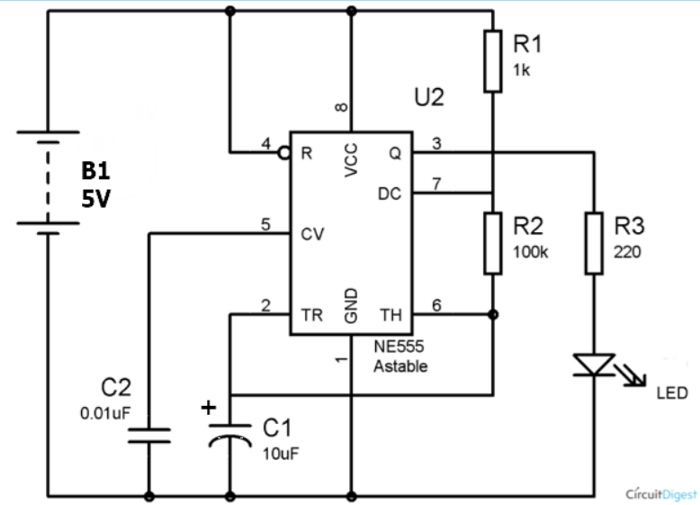
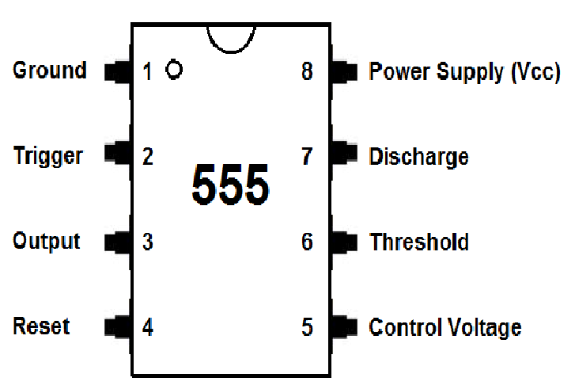
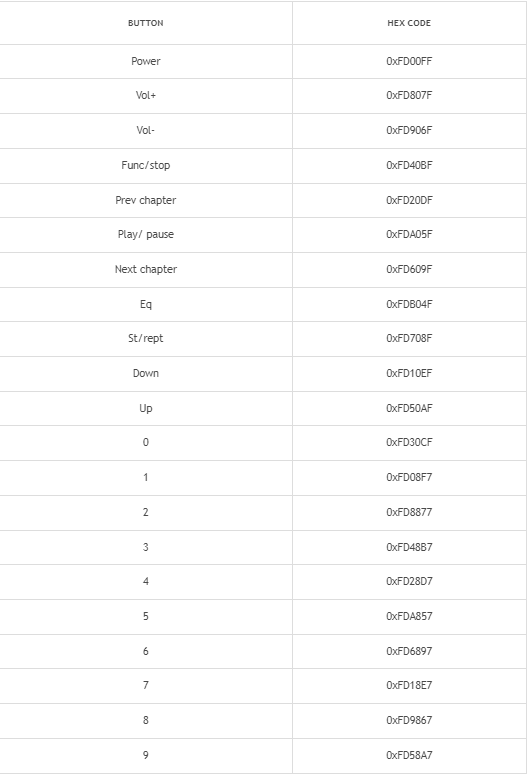

Web Development
555 timer assigment
We have to rig up and create a schematic into TinkerCAD circuit.
Below is chip arragement and schematic.
|  |  |
|---|
Finished Circuit
All the component are labeled
Click here to copy see my circuit. (ಠ‿↼)
Single switch 4 outcomes
Our assigment is to use an UNO arduino to show different pattens with just 1 switch
Click here to copy see my circuit. (ಠ‿↼)
I program the Arduino to have 5(including switching everything off) modes in total
- All LED off
- Red LED on, everything else off
- Green LED on, everything else off
- Yellow LED on, everything else off
- All Led till turn on in sequence before switching off
This is the code I used to make it happen
//define your shit first
#define RLED 8
#define GLED 9
#define YLED 10
#define SWITCH 3
int count = 0; //For counting
int state = HIGH;
int runway = 400;
void setup()
{
pinMode(RLED ,OUTPUT);
pinMode(GLED ,OUTPUT);
pinMode(YLED ,OUTPUT);
pinMode(SWITCH ,INPUT_PULLUP);
Serial.begin(9600);
Serial.println("Auduino plugged in");
decode(count);
}
void loop()
{
if(digitalRead(SWITCH) == LOW){
// switch pressed
if (state == HIGH){
// ok, lets process
state = LOW;
}
else {
// ignore, since state = LOW
}
}
else {
// switch is at normal
if (state == LOW){
// register keypress
count = (count + 1) % 5;
decode(count);
state = HIGH;
}
}
}
void decode(int v)
{
switch(v){
case 0:
digitalWrite(RLED, 0);
digitalWrite(GLED, 0);
digitalWrite(YLED, 0);
Serial.println("Case 0 working");
break;
case 1:
digitalWrite(RLED, 1);
digitalWrite(GLED, 0);
digitalWrite(YLED, 0);
Serial.println("Case 1 working");
break;
case 2:
digitalWrite(RLED, 0);
digitalWrite(GLED, 1);
digitalWrite(YLED, 0);
Serial.println("Case 2 working");
break;
case 3:
digitalWrite(RLED, 0);
digitalWrite(GLED, 0);
digitalWrite(YLED, 1);
Serial.println("Case 3 working");
break;
/*There is a better way of doing the loop but I just drank some beer*/
case 4:
digitalWrite(YLED, 0);
delay(500);
Serial.println("Case 4 working");
digitalWrite(RLED, 1);
delay(runway);
digitalWrite(GLED, 1);
delay(runway);
digitalWrite(YLED, 1);
delay(runway);
digitalWrite(RLED, 0);
delay(runway);
digitalWrite (GLED, 0);
delay(runway);
digitalWrite (YLED, 0);
Serial.println("Loop is working");
break;
}
}
/*The code is written in a way for me to edit it quickly and infrom me
if there is any error when testing edit on ur free will because I can't be bothered*/
To see how it functions, make the circuit (or copy) like the one I made above and paste it into the code
(remember to switch to text!)

You could try and build it using the arduino your teacher gave you.
IR Remote
This is here to show how an IR remote works in case you want to use it for your project
Click here to copy see my circuit. (ಠ‿↼)
Pressing certain numbers would show certain effects
- Toggle Red Led on and off
- Light up Greed led and off
- Toggle Blue Led on and off
- Light show ( ͡◉ ͜ʖ ͡◉) (Start the Simulation to see!)
This are all the Hax key for all the button on a IR remote! 
This is the code I used to make it happen
/*You have to include this for remote to work*/
#include < IRremote.h> //remove spacing before starting
//To indicate IR receving pin
const int RECV_PIN = 11;
// Define IR Receiver
IRrecv irrecv(RECV_PIN);
// Defind Results object
decode_results results;
//defining LED
const int B = 4;
const int G = 5;
const int R = 6;
//Start things at false
int toggle = false;
void setup()
{
Serial.begin(9600);
pinMode(R, OUTPUT);
pinMode(G, OUTPUT);
pinMode(B, OUTPUT);
irrecv.enableIRIn(); // enable the IR receviver
Serial.println("Program started"); //For debugging and checking if things work
}
void loop()
{
// detect IRRemote keypress
if (irrecv.decode(&results))
{
// print out code
Serial.println(results.value, HEX);
switch(results.value){
//if button "1" is clicked
case 0xFD08F7 :
if (toggle)
digitalWrite(R, LOW);
else
digitalWrite(R, HIGH);
toggle = !toggle;
break;
//If button "2" is clicked
case 0xFD8877 :
digitalWrite(G , HIGH);
delay(500);
digitalWrite(G , LOW);
delay(500);
break;
//If button "3" is clicked
case 0xFD48B7 :
if (toggle)
digitalWrite(B, LOW);
else
digitalWrite(B, HIGH);
toggle = !toggle;
break;
//If button "4" is clicked
case 0xFD28D7 :
if (toggle)
digitalWrite(R, LOW);
else
digitalWrite(R, HIGH);
delay(300);
digitalWrite(R, LOW);
delay(300);
digitalWrite(G, HIGH);
delay(300);
digitalWrite(G, LOW);
delay(300);
digitalWrite(B, HIGH);
delay(300);
digitalWrite(B, LOW);
toggle = !toggle;
}
irrecv.resume();
}
}
To see how it functions, make the circuit (or copy) like the one I made above and paste it into the code
(remember to switch to text!)
You could try and build it using the arduino your teacher gave you.
UltraSonic Sensor
This is here to show how an Ultrasonic Sensor in case you want to use it for your project
Click here to copy see my circuit. (ಠ‿↼)
Going in range would trigger certain reactions!
- Going below 100 would light up the red LED
- Going above 80 would light up the green LED
This is the code I used to make it happen
//Define LED
#define RLED 12
#define GLED 11
//Define sensor
#define TRIGGER 6
#define ECHO 5
void setup() {
Serial.begin (9600); //allow Serial Monitor to start
pinMode(TRIGGER, OUTPUT); //define 6 as an output
pinMode(ECHO, INPUT); //define 5 as an input
pinMode(RLED, OUTPUT); //define 12 as an output
pinMode(GLED, OUTPUT); //define 11 as an output
}
void loop() {
//Too long to explain this part Just put code in if you wish to use ultra sonic sensor
long duration, distance;
digitalWrite(TRIGGER, LOW);
delayMicroseconds(2);
digitalWrite(TRIGGER, HIGH);
delayMicroseconds(10);
digitalWrite(TRIGGER, LOW);
duration = pulseIn(ECHO, HIGH);
distance = (duration/2) / 29.1;
//Important part
if (distance < 100) { //If sensor detect something in this range Red LED will turn on
digitalWrite(RLED,HIGH);
digitalWrite(GLED,LOW);
}
//If the sensor does not detect anything In the 80 range It would turn the green LED on
else {
digitalWrite(RLED,LOW);
digitalWrite(GLED,HIGH);
}
//If sensor detect things over 200 It would print out of range
if (distance >= 200 || distance <= 0){
Serial.println("Out of range");
}
else {
Serial.print(distance);
Serial.println(" cm");
}
delay(500);
}
To see how it functions, make the circuit (or copy) like the one I made above and paste it into the code
(remember to switch to text!)

You could try and build it using the arduino your teacher gave you.
LED Strips
This is here to show how an Ultrasonic Sensor in case you want to use it for your project <
Click here to copy see my circuit. (ಠ‿↼)
Going in range would trigger certain reactions!
- Going below 100 would light up the red LED
- Going above 80 would light up the green LED
This is the code I used to make it happen
//Insert this to use NeoPixel(LED STRIPS)
#include
//define your stuff here
const int LEDSTRIPS = 8;//Using PIN 8 for this project
const int NUMOFLEDS = 12; //The number of LEDS, in this case 4*3
//Do I really need to explain this? or could you just copy and paste this in
Adafruit_NeoPixel np = Adafruit_NeoPixel(
NUMOFLEDS, LEDSTRIPS, NEO_GRB + NEO_KHZ800);
void setup()
{
Serial.begin(9600);//for debugging
np.setBrightness(128);//Brightness of the LED
}
void loop()
{
//this loop goes from purple>cyan>vomit yellow
unsigned long c = np.Color(148, 25, 204);
flash(c);
c = np.Color(112, 236, 204);
flash(c);
c = np.Color(207, 239, 74);
flash(c);
// scroll random lights
for (int i=0; i< 10; ++i)
runLights();
}
void flash(unsigned long c)
{
np.fill(c, 0, NUMOFLEDS);
np.show();//display the LEDS
delay(500);
np.clear();//Clear the LEDS
np.show();
delay(500);
}
void runLights()
{
const int DLY = 100;
int r, g, b;
// obtain a random color
r = random(256); g = random(256); b = random(256);
unsigned long c = np.Color(r,g,b);
for (int p=0; p < NUMOFLEDS; ++p)
{
np.setPixelColor(p, c);
np.show();
delay(DLY);
}
}